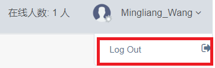

前端页面代码主要显示退出系统或者网站的可视化按钮代码,代码如下：（请忽略项目关键字：CPU）
<ul class="nav navbar-nav navbar-right">
<li class="">
<a href="javascript:;" class="user-profile dropdown-toggle" data-toggle="dropdown" aria-expanded="false">
<img src="@Url.Content("~/assets/img/user2.png")" alt="">@CPU.UserProfile.User.UserID
<span class="fa fa-angle-down"></span>
</a>
<ul class="dropdown-menu dropdown-usermenu pull-right" style="width:35px">
<li>
@using (Html.BeginForm("LogOff", "Account", FormMethod.Post, new { id = "logoutForm", style = "padding: 12px 0px;" }))
{
@Html.AntiForgeryToken()
<a href="javascript:document.getElementById('logoutForm').submit()"><i class="fa fa-sign-out pull-right"></i> Log Out</a>
}
</li>
</ul>
</li>
<li class="hidden-xs"><a><span>在线人数: @System.Web.HttpContext.Current.Application["OnLineUserCount"] 人</span></a></li>
</ul> 后台的代码，主要是对前台点击按钮的事件进行处理：退出系统和清除系统Cookie
[HttpPost]
[AllowAnonymous]
[ValidateAntiForgeryToken]
public ActionResult LogOff()
{
FormsAuthentication.SignOut();//退出登录
System.Web.HttpContext.Current.Session.Abandon();//清理缓存
return RedirectToAction("Login", "Account");
}